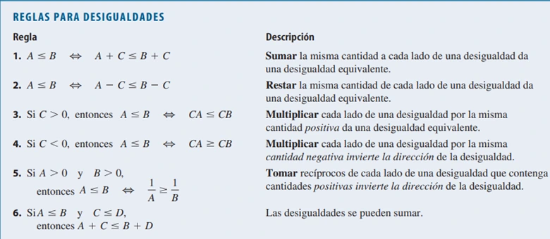

Desigualdades o Inecuaciones
Una inecuación es una relación de desigualdad entre dos expresiones algebraicas en las que aparece una o más incógnitas. Resolver una inecuación consiste en encontrar todos los valores de la incógnita para los que se cumple la relación de desigualdad.

Resolución de desigualdades lineales:
Una desigualdad es lineal si cada término es constante o un múltiplo de la variable. Para resolver una desigualdad lineal, aislamos la variable en un lado del signo de desigualdad.
Ejemplos
\(4 \leq 3x - 2 < 13\) (Desigualdad dada)
\(6 \leq 3x < 15\) (Suma 2 a ambos lados)
\(2 \leq x < 5\) (Dividir entre 3)
Por lo tanto, el conjunto de solución es \([2, 5)\)
Video de ayuda
Resolución de desigualdades no lineales
Para resolver desigualdades que contengan cuadrados y otras potencias de la variable, usamos factorización, junto con el principio siguiente:
El Signo de un Producto o Cociente
Si un producto o un cociente tienen un número par de factores negativos, entonces su valor es positivo. Si un producto o un cociente tienen un número impar de factores negativos, entonces su valor es negativo.
Guía para Resolver Desigualdades No Lineales
1. Pase todos los términos a un lado. Si es necesario, reescriba la desigualdad de modo que todos los términos diferentes de cero aparezcan en un lado del signo de desigualdad. Si el lado diferente de cero de la desigualdad contiene cocientes, páselos a un común denominador.
2. Factorice. Factorice el lado diferente de cero de la desigualdad.
3. Encuentre los intervalos. Determine los valores para los cuales cada factor es cero. Estos números dividirán la recta real en intervalos. Haga una lista de los intervalos que están determinados por estos números.
4. Haga una tabla o diagrama. Use valores de prueba para hacer una tabla o diagrama de los signos de cada factor en cada intervalo. En el último renglón de la tabla determine el signo del producto (o cociente) de estos factores.
5. Resuelva. Determine la solución de la desigualdad a partir del último renglón de la tabla de signos. Asegúrese de verificar si la desigualdad queda satisfecha por algunos o todos los puntos extremos de los intervalos. (Esto puede ocurrir si la desigualdad contiene ≤ o ≥).
Video de ayuda
Desigualdades con Valor Absoluto
Estas propiedades se pueden demostrar con el uso de la definición de valor absoluto. Para demostrar la Propiedad 1, observe que la desigualdad \( |x| < c \) dice que la distancia de \(x\) a 0 es menor que \(c\), y de la Figura 8 vemos que esto es verdadero si y sólo si \(x\) está entre \(-c\) y \(c\).
Ejemplos
Resuelva la desigualdad \( |x - 5| < 2 \)
Es equivalente a: \( -2 < x - 5 < 2 \) (Propiedad 1)
\( 3 < x < 7 \) (Sumar 5)
El conjunto solución es el intervalo abierto \( (3, 7) \)
Video de ayuda
Simetría
Decimos que una figura es simétrica respecto a una recta cuando cada punto a un lado de esa recta tiene otro punto al otro lado y a la misma distancia de esa recta.